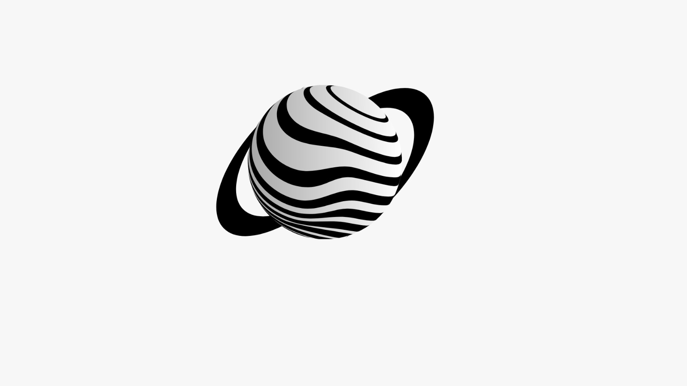

Decide
Coordena objetivos, permissões e memória; não executa diretamente um job irrestrito.

Coordena objetivos, permissões e memória; não executa diretamente um job irrestrito.
Executa offline, com limites de CPU, memória, processos, tempo e filesystem.
Todo artefato compartilhado pode carregar origem, destino, protocolo, trace e hashes.